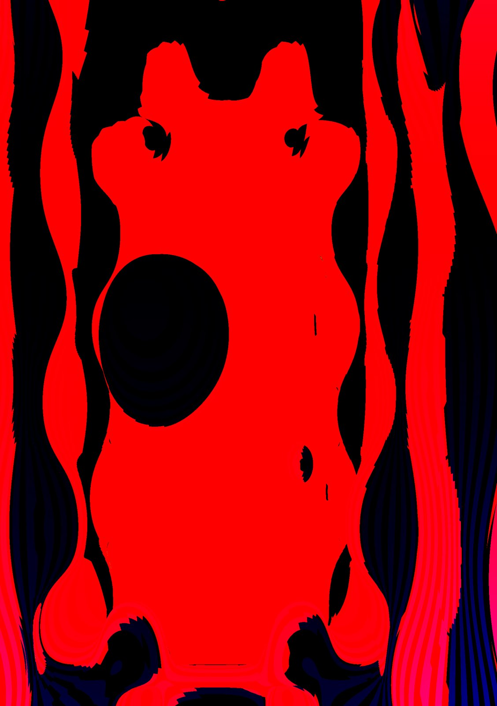
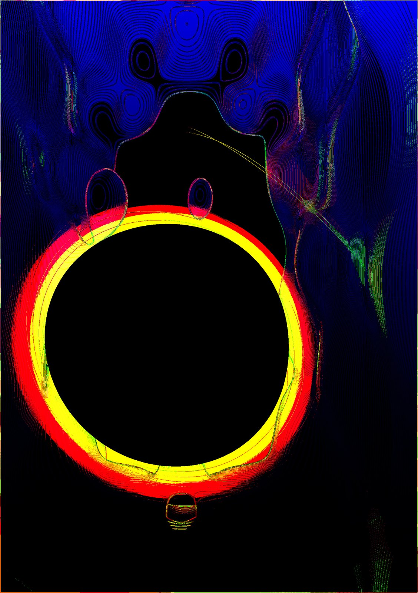
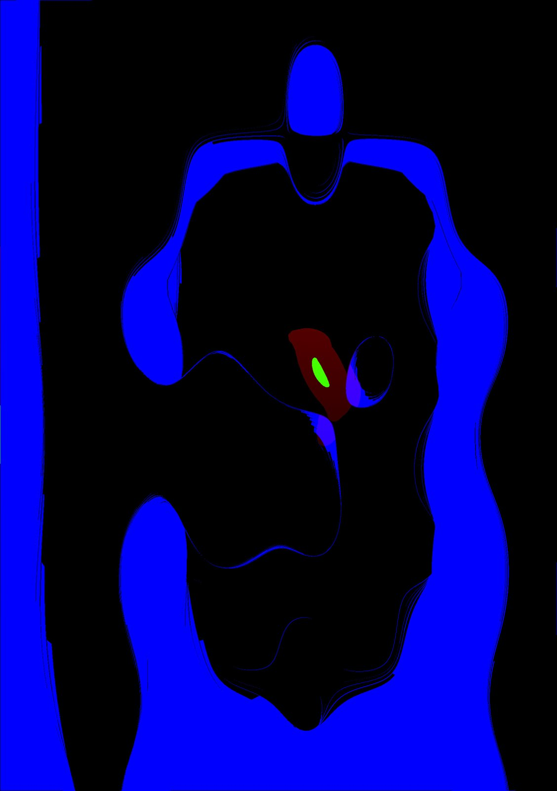
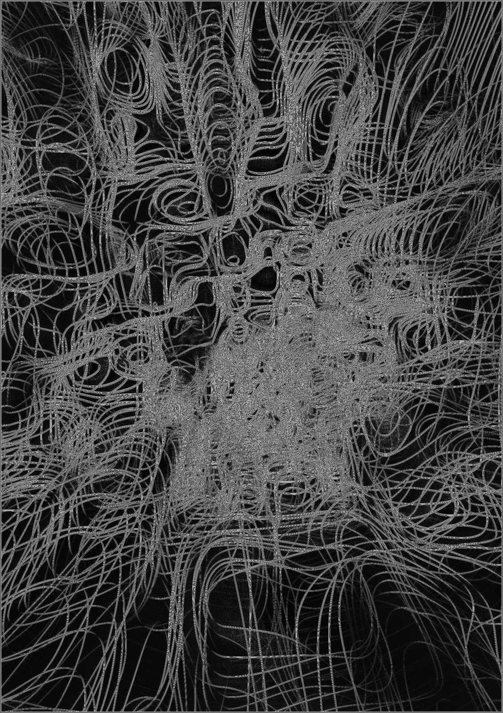
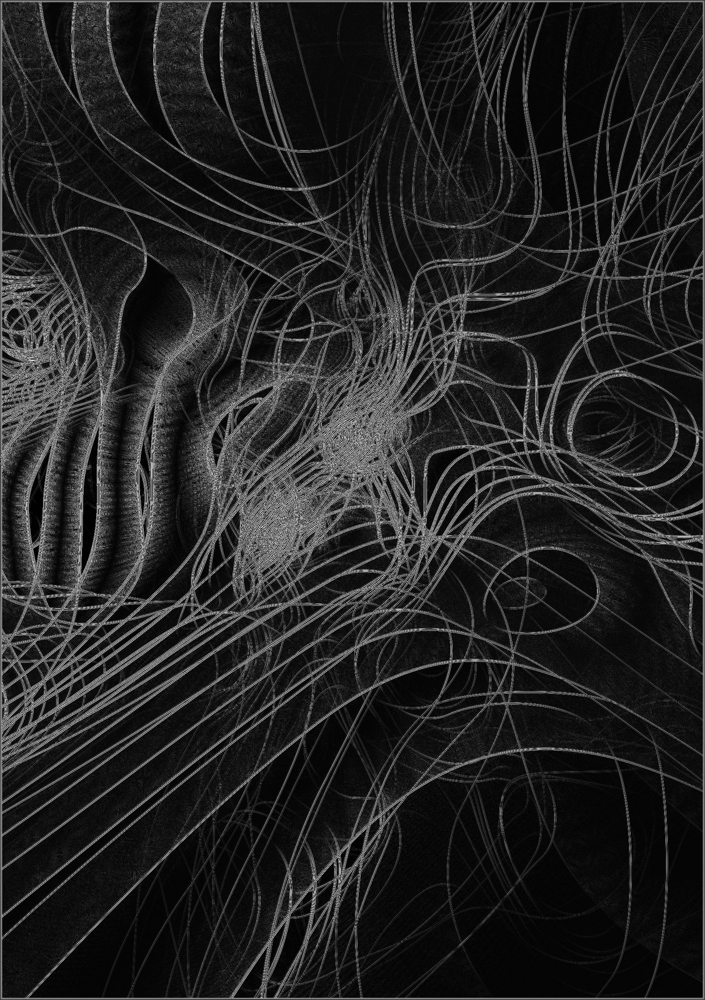
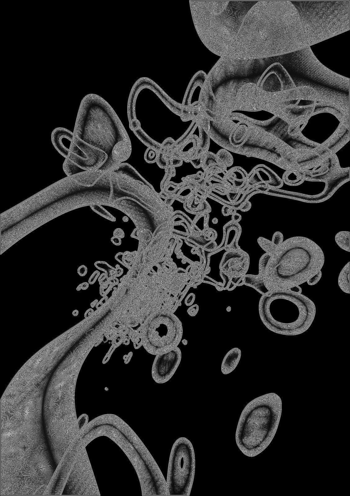

Artistic research / digital image
A.PHANTASIA — Fields of Imagining
A.PHANTASIA ~ FIELDS OF IMAGINING by Oyu Ocean features computer-generated and code-manipulated visuals of phosphenes and inner, usually unseen, experiences: glowing, shifting fields that probe the boundaries between sensory perception, mental imagery, and imagination.
All work ↗
English
A.PHANTASIA ~ FIELDS OF IMAGINING by Oyu Ocean features computer-generated and code-manipulated visuals of phosphenes and inner, usually unseen, experiences: glowing, shifting fields that probe the boundaries between sensory perception, mental imagery, and imagination.
Oyu Ocean is a gender-fluid sensory and experience artist whose work moves through themes of love, grief, liberation, and kinship. As a media artist, writer, performer, Ocean invites us into a world of playful intensity and poetic imagination.
The artworks displayed are part of a larger body of artistic research visualizing phosphenes and inner, usually unseen, experiences. This approach highlights how imagination and visual phenomena extend beyond externally visible images to include subjective, internal experiences that are not typically accessible or observable in visual hegemony. The artworks probe the boundaries between sensory perception, mental imagery, and imagination. This research situates these visualizations within broader cognitive, somatic, and philosophical frameworks, emphasizing the interplay between sensory input, neuronal activity, and phenomenological experience. Such artistic explorations provide a unique method to make visible the invisible workings of the mind’s eye, expanding understanding of imagination both scientifically and experientially. The project embodies a convergence of art and neuroscience, capturing the essence of ‘phantasia’ as not only outward vision but also inner, subjective experience.
The artworks invite imagination as a bridge connecting the inner worlds of the artist and others, fostering a shared space for exploring subjective, often unseen experiences. Through visualizing phenomena like phosphenes, they encourage viewers to engage with and reflect on their own mental imagery and sensory experiences, creating meaningful dialogue that transcends individual differences. This shared imaginative play serves as a foundation for empathy, curiosity, and mutual understanding despite the diversity of internal perceptions.
Instagram: @oyuocean.art
Deutsch
A.PHANTASIA- Fields of Imagining von Oyu Ocean zeigt computergenerierte und code-manipulierte Visualisierungen von Phosphenen und inneren, normalerweise unsichtbaren Erfahrungen: leuchtende, sich verändernde Felder, die die Grenzen zwischen Sinneswahrnehmung, mentalen Bildern und Vorstellungskraft ausloten.
Die Arbeit ist Teil einer größeren künstlerischen Forschung zu Sinneswahrnehmung, mentalen Bildern, Sprache und Vorstellungskraft, die diese kognitiv, somatisch und philosophisch untersucht und dabei das Zusammenspiel zwischen Sinneseindrücken, neuronaler Aktivität und phänomenologischer Erfahrung betont.
Phosphene sind Eindrücke von Licht in der Abwesenheit desselben, sie entstehen etwa, wenn wir uns die Augen reiben. Anders als viele andere Menschen fehlt mir die visuelle qusiperzeptionelle Fähigkeit, ich kann mir Dinge nicht willentlich und tatsächlich bildlich vorstellen, dies beschreibt man alas Aphantasie.
In unserer von visuell hegemonialen Welt steht mein Erfahren in einer bis vor kurzem unbekannten Peripherie, so bekam das Phänomen der Aphantasie erst 2015 seinen Namen.
Mit den Werken möchte ich Fantasie anregen und Brücken bilden zwischen unseren facettenreichen Erfahrungs- und Wahrnehmungswelten; einen Raum schaffen, der individuelle Unterschiede zu überwinden versucht.
Dieses gemeinsame fantasievolle Spiel bildet eine Grundlage für Empathie, Neugier und gegenseitiges Verständnis, trotz oder gar wegen der Vielfalt von Wahrnehmungs- und Erfahrungswelten.






Continue exploring
All projects ↗